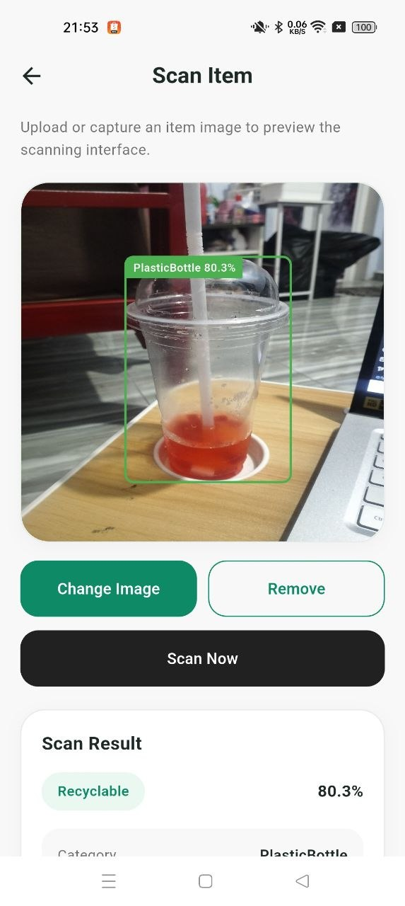
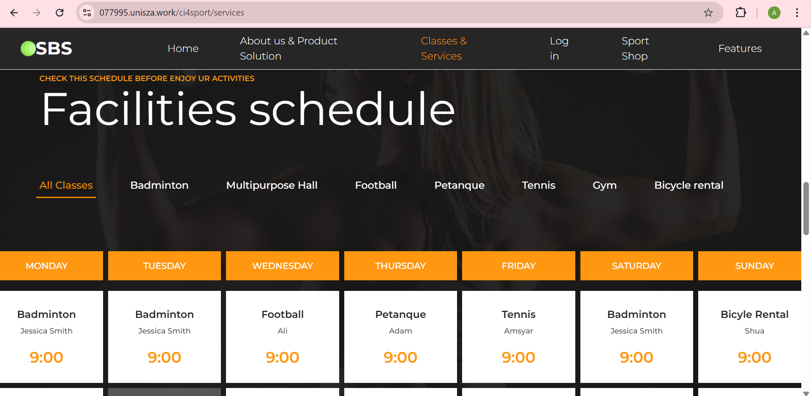

MY PROJECTS
This section highlights several projects that I have developed during my study journey. These projects helped me improve my skills in web development, mobile application development, database management, artificial intelligence, and user interface design.

A mobile application integrated with YOLO object detection to classify recyclable and non-recyclable waste using object detection. This project helps users identify recyclable materials more efficiently while supporting environmental awareness.

SBS Sports Booking System is a website that allows users to book sports facilities easily. Users can choose the venue they want and check the available schedule, including opening days and operating hours. Besides booking, users can also buy sports equipment such as balls, rackets, and other items.
Through these projects, I improved my problem-solving skills, coding knowledge, database understanding, UI design skills, and ability to manage software development tasks.
I used several tools and technologies such as HTML, CSS, JavaScript, PHP, MySQL, Flutter, Firebase, Python, YOLO, GitHub, and Visual Studio Code.
In the future, I hope to improve these projects by adding better user interfaces, stronger system security, more accurate detection features, and real-world deployment.